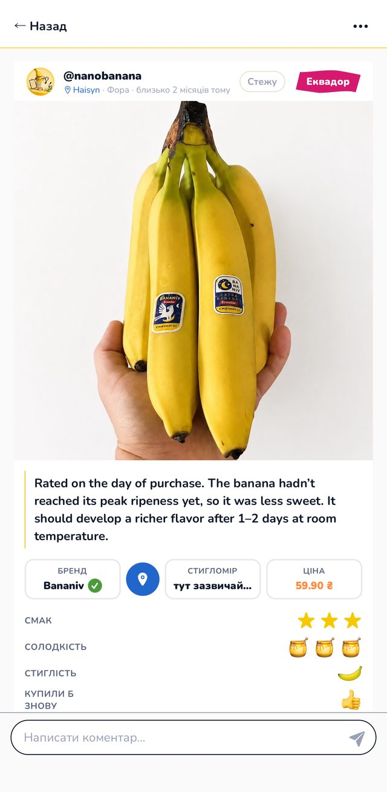
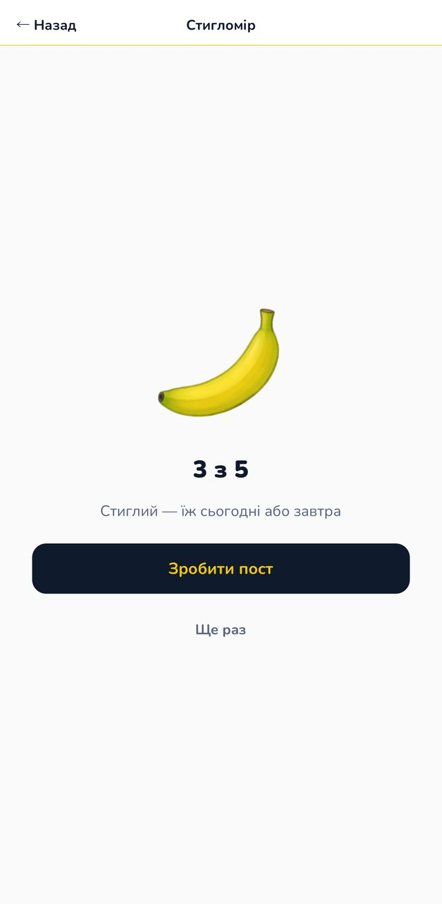
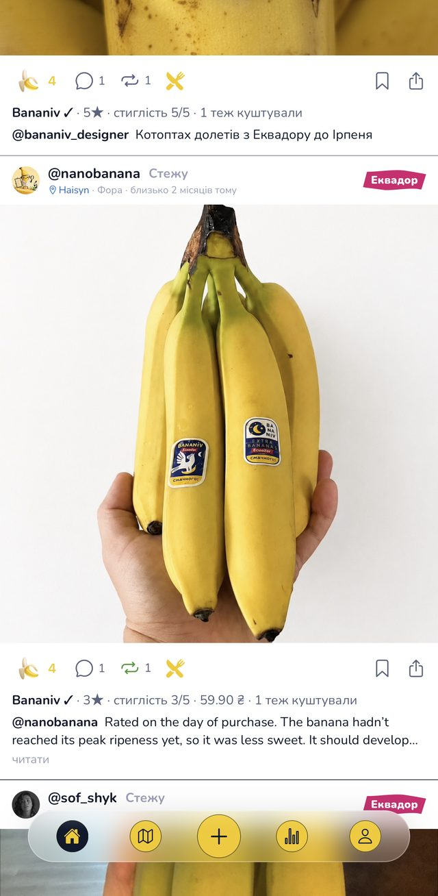
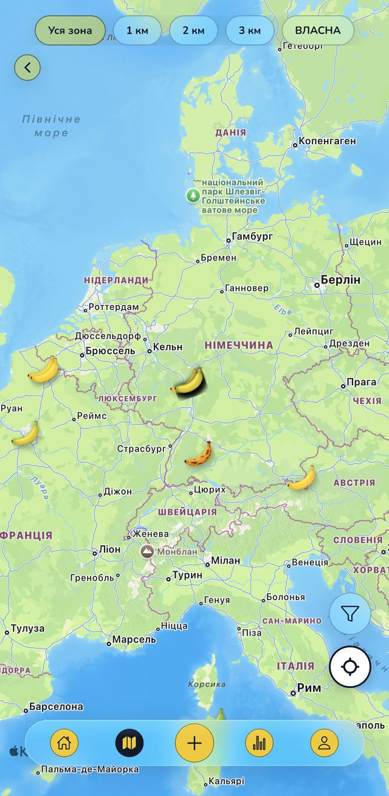
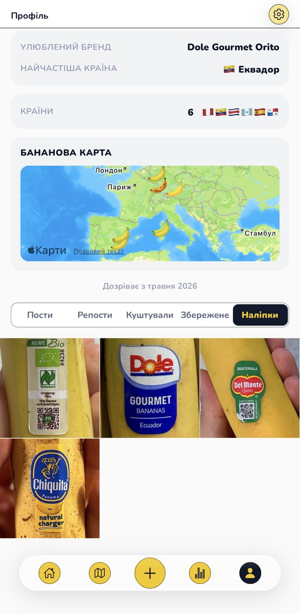

The social app about bananas
Rate the banana you actually ate.
One photo, one taste score, one honest word about the shop. NanaFeed checks that it’s a real banana, reads how ripe it is, and puts your review on the map next to everyone else’s. No influencers, no ads, no fake fruit.
Free. Public beta on iPhone and Android; App Store and Google Play soon. Made in Frankfurt by people who trade bananas for a living.

How it works
Thirty seconds in the kitchen. The rest happens on its own.
Shoot the banana
The app checks it is a real banana before anything is posted, so the feed stays fruit, not noise.
Rate it
Taste 1–5, sweetness, ripeness 1–5, price per kilo, the shop, and whether you’d buy it again. Peel the sticker into your collection.
See the map
Every rating lands on a store. Open the map and see which chain near you sells sweet fruit and which sells green rocks.
What’s inside
Real screens from the current build, not mockups.
Ripeness meter
Point the camera at a banana and get its ripeness on a 1–5 scale with a plain tip: eat today, wait two days, bake bread. Calibrated to the scale real traders use, not to stock photos.

“I tasted it too”
Bought the same banana? Confirm someone’s post with your own taste and ripeness. Three people agree and the rating stops being one person’s opinion.

Every shop, seven countries
61 307 retail locations already on the map across Ukraine, Germany, Poland, France, Spain, Italy and Portugal. Filter by chain and radius; the shelf ripeness index shows where enough people rated.

Your banana profile
Favourite brand, most frequent origin, countries you’ve tasted, your own banana map and a sticker album cropped straight from your photos: Chiquita, Dole, Del Monte, Rewe Bio, a no-name from a market in Lisbon.

For retailers and brands
The shelf, seen by the people who buy from it
Every post is a photo-verified data point: brand, price per kilo, ripeness on the shelf, taste after purchase, store and date. Aggregated by chain and city it becomes something no audit gives you: how your bananas actually taste to customers, and how they compare to the shop across the street. We are collecting now and will share the first reports with partner chains after launch.
Talk to us · maksym@bananiv.com